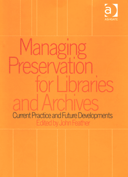

|  |
| About IR |
| Editors |
| Author instructions |
| Copyright |
| Author index |
| Subject index |
| Search |
| Reviews |
| Register |
| Home |
Feather, John. (Ed.), Managing preservation for libraries and archives: current practice and future developments. Aldershot, Hants: Ashgate, 2004. xii, 181 p. ISBN 0 7546 0705 4. £49.50
John Feather is a figure of authority in preservation and publishing fields (as well as in some others). He has previously been the author of the books on preservation management (Feather, J.P., Preservation and the management of library collections 2nd Edition , Library Association Publishing, London , 1996; Feather, J.P., Matthews, G. and Eden, P.A., Preservation management. Policies and practices in British libraries , Gower, Aldershot , 1996) and he has recently edited a collection of articles on this subject.
The authors participating in this collection are experts and researchers in various areas of preservation and cover an extensive range of relevant issues. They also come from a variety of European countries and one is from Australia. However, the discussion is of a global character than representing specific national traditions. The editor himself provides an extensive introduction on policies of cultural heritage and institutions and policies, as well as on problematic issues of preservation, such as access and use, obstacles to preservations, criteria of selection, etc. There are also three chapters devoted to digital material and digital preservation. At present this seems to be the hottest issue that poses greatest problems though (or maybe because) it has emerged only recently. The nature and technologies of digital preservation are covered as well as selection problems and long-term preservation issues, including the copyright, authenticity and integrity and management. There is also an extensive chapter on paper preservation and one on preservation of sound recordings. The latter was a discovery for me personally as I have never been involved in any sound preservation activity. Many practical cases and examples are provided in these chapters to illustrate the problems or successful solutions.
On the whole these six chapters provide a good overview of the latest developments in several important preservation fields, but there is even more to the book. Graham Matthews has prepared a review of information sources (printed and digital) on various aspects of preservation management. This is a valuable addition to the rest of the book and especially to the teachers and students in the departments concerned with document preservation.
The final chapter on the future of preservation was somewhat disappointing as it was mainly the repetition of the things discussed in the previous chapters and did not shed any new light on the issues. Short comments on the situation of preservation in different parts of the world and the efforts of international agencies were somewhat superficial. On the other hand, this closing chapter can be regarded as a summary and generalisation of the whole book. The co-operation role and importance was the most interesting aspect in this chapter.
The book is easy to read and is often intriguing, something that does not often happen with professional books!
On the whole, I see this book as a valuable addition to the collection on various aspects of preservation for libraries, archives, museums and other relevant institutions as well as to universities and professional education institutions offering study programmes or courses within this area.
Dr. Elena Macevičiūtė
Vilnius university, Lithuania and
Swedish School of Librarianship and Information Studies
Borås, Sweden
April, 2005
How to cite this review
Macevičiūtė, E. (2005). Review of: Feather, John (ed.), Managing preservation for libraries and archives: current practice and future developments. Aldershot, Hants.: Ashgate, 2004 Information Research, 10(3), review no. R169 [Available at: http://informationr.net/ir/reviews/revs169.html]